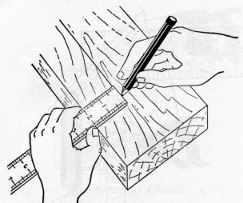
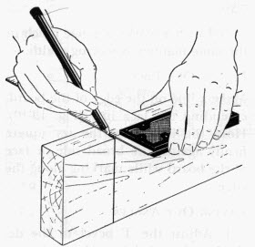
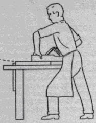
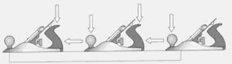
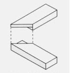

The various operations performed in woodworking can be summarized as follows:
• Marking and measuring
• Sawing
• Planing
• Chiseling
• Mortising and tenoning
• Grooving and tenoning
• Moulding
• Recessing
Marking gauge, marking knife, pencil, steel rule etc., are used for marking. For measuring, tools like tape, try square etc. are used. One of the edge and face of the component is planed before marking. While marking, care is necessary to avoid defects such as knots, shakes, twisted fibers etc.
|  |  |
| Marking a width with rule and pencil | Marking a line along a straight edge |
 |  |
| Checking measurement of the marking gauge | |
 |  |
| Scoring a line with the marking gauge | Marking a line across the edge from the face of the board. |
Sawing is the wood working process, which is used to cut the wood on predetermined dimensions. Before a piece of wood is to be sawn to accurate size and shape it is marked with a line. In sawing, allowance must be made for width of saw cut. Do not saw directly on the marked line.
13.2.1 Cross cutting
1. Lay out and marked the job to be cut.
2. Fasten the job in bench vice.
3. Place the heel of the crosscut saw near the cutting line on the waste side of the wood and pull it, guiding it with the left thumb.
4. Make short strokes for several cuts, and then test with a try square to see that the saw blade is cutting at right angles to the surface of the job.
5. Continue cutting, with long strokes at 450 to the job.

Figure 2: Cross Cutting
1. Mark the job to be sawed.
2. Fasten the job in a vice.
3. Start the ripping procedure, begin the cut with the rip saw on the back stroke. Holding the ripsaw so that the cutting edge is approximately 600 with the surface.
4. Continue ripping with short easy strokes to prevent splitting.
Figure 3: Ripping
Jackplane is used for getting a true surface of wood. Planing process is always across the grains.
Process of planing:
i. Place the job on the workbench, and fasten it securely.
ii. Adjust the cutting depth of the plane iron so that it is uniform and not too deep.
iii. Plane the surface until it is clean and smooth.
iv. Test the surface for flatness with a try square.
v. Test the surface across diagonals to detect a wind.
 | |
|  |  |
| Two views for proper planning - adopt a firm stance with feet one pace apart the left hand presses down as the plane travels along, but lifts at the end of the stroke | |
 |  |
| Scoring a line with the marking gauge | |
(a) Always place the plane at the end of the piece of wood and push it firmly across the entire length, without it lifting off the surface. Apply pressure down on the front and push forward slowly, taking a fine shaving from the end of the timber.
(b) Apply even pressure when the whole plane is on the surface, to shave the entire length of the timber.
(c) When nearing the end, release the pressure on the front but maintain it on the back off the end.
Planing edges
Keep the plane straight and square to the face. Sight along the edge of the timber and select the hollowed edge. Use the longest plane possible.
To guide the plane, place your thumb on top of the plane at the front with the tips of your fingers resting against the edge of the job. Plane the full length. Check from the face with a try square.
Planing end grain
To straighten end grain hold the plane as before with a finger at the front to guide the plane, and work in from both ends towards the centre.
This process consists of removing small stock of wood for producing desired shape. The process of chiseling is described below:
i. Fasten the wood firmly in bench vice.
ii. Push the chisel with one hand while using the forefinger and thumb of the other hand as a brake. Make sure that the bevel of the chisel is up when used in this manner.
iii. Continue to make thin cuts.

Figure 5: Chilseling
The process of mortising means producing a cavity or recess in a wooden piece. Mortise chisel and a hammer do it. The process of tenoning means producing a projected piece of wood, which fits into the corresponding mortise. A tenon saw is used to produce tenon. Mortise and tenon joint in one of its many forms is probably the most widely used in woodwork joints.

Figure 6: Mortising And Tenoning
When very wide planks are required, which are not possible to get commercially, grooving and tongueing is used. Standard width planks are joined to form required width. On one plank, a groove is prepared by plough plane and on the other plank tongue is prepared with tongueing plane. This process obtains tabletops, drawing board etc.
Figure 7: Grooving And Tongueing
Moulding is done for decoration of indoor window and door-frames. Along the periphery of the wood, concave, convex and other curved lines are cut for decorative purposes.
Figure 8: Moulding
Recessing is a sort of mortising operation except that the cavity produced is blind and not through as is done in mortising. Straight, inclined or square recess is to be cut. The recess is cut with saw and chisel.
Rebating
It is the process of forming a step in the section of the wood, which may be lengthwise or crosswise. Rebating brings the rigidity to the work and prevent the buckling of the plank. It is done on the edges of planks and boards. While rebating, the work must be held firmly with a suitable holding tool. Rebating is employed for joining flooring, to join tops of cabinet, to fit shutters in the door and window frames and to increase the width by joining number of planks.

Figure: 9
When two pieces of wood are joined, the junction of this is called the joint and the art of joining the various pieces of timber in the best possible manner is known as joinery. When two wooden pieces are connected together, the weakest part in the assembly will be the joint. Joints should be tight, strong, and well-made. The two pieces that are to be joined together are called members.
To design a joint correctly, one should take care to see that it is so arranged as to offer the maximum resistance to whatever strain is likely to occur.
Classification of joints:
Widening joints: These joints are used for increasing the width or surface of narrower timbers in the same plane on edge to create a wide panel such as in the case of floor boards, notch boarding, panels, etc.
Angle and bearing joints: These joints are used for joining of timber not in the same plane. This class is a broad one and covers variety of joints such as halving joint, mortise and tenon joint, dovetail joint, housing joint, bridle joint, cogging, keying, etc.
Lengthening joints: These joints are used for increasing length of timber such as scarf joint, lap joint and halving joints.
Hinging and shutting joints: These joints are used for windows and doors.
Widening joints: Figure below shows most commonly adopted widening joints. The names of various joints are written against them.

Figure: 10
Butt Joint
The butt joint is the simplest and commonest form of all joints. The butt joint is where two square cut timbers are butted up against one another on the same plane and then fastened together: The area of contact for this basic of all joints is limited to the end of the one piece of timber that butts against the surface of the second piece. It is the weakest type of joint, but is the easiest to make. They can be used in box, widening or framing construction.
Procedure for constructing butt joint
1. Cut the ends of the two pieces square and place them together.
2. Lay all the pieces out with the face up.
3. Plane the edges true and test for fit against the corresponding pieces. Line the ends or the pencil lines up each time.
4. The edges must be perfectly straight and square to the face.
5. Check that there is no gap and the surface is flat. If you try to close gaps with a clamp or by filling them, the joint will split later.
6. Pieces of wood should be on edge and connect together by nailing or screwing through the top of the first into the edge of the second.
7. Adhesive is usually applied to the joint before fixing to increase its strength.
8. Butt joints may also be strengthened by fixing a nail plate over the outside, or a timber block may be fixed to the inside.
 |  |
| Butt joint for box construction | Butt joint for frame construction |
 | |
| Butt joint can be strengthened by fitting a block of timber within the corner either | |
The lap joint is the simplest of all joints. This type of joint is more suitable for lengthening lighter structures and is the easiest method of joining two timbers. Measure the timbers and mark the halfway positions on each. The laps should be cut to half the thickness of the timber, one cut reflecting the other in the second timber. The two shoulders made must butt exactly against the end of the joining pieces. Glue all the surfaces together before drilling holes in the construction and screw the sections together in strategic points staggered across the surface grain to avoid splitting. The application of this Joint can be seen in ceiling work.
Figure 12: Lap joint
In rebated and filleted joint the small depression is made in connecting ends of both the members and other small piece fitted in it. The shared area of contact is increased by joining one piece of wood to a rebate cut out of the end of one piece of timber at a corner. The edge of the rebate is marked on the appropriate piece of timber and the depth is also marked around the sides and end. The edge should be cut down to the required depth with a tenon saw and the surplus material removed using a chisel or a router set to the appropriate depth. The depth should be cut twice, the first time to remove the bulk of the material, the second time to carefully take it down to the correct level. This type of joint construction also allows nails or screws to be used on both pieces at right angles to each other, creating an even stronger joint.
Figure: 13
1. Square the ends of both pieces of timber. Set out the shoulder line on the end of one piece, coming in from the end by the thickness of the other piece. Square across the face side and down both edges. This line is the barefaced side of the timber.
2. Square a second shoulder line back towards the end. This should be one-third the thickness of the timber and down both edges.
3. Gauge the depth of the groove on the edge between the two shoulder lines.
4. Cut the shoulders down to the gauge line with a tenon saw. Remove the waste with a chisel and check for flatness.
5. With the gauge set as before, mark a line across the back face and across the edges of the other piece.
6. Gauge from the face side towards the end on each side and across the end. Saw down to the gauge line with a tenon saw.
7. Chisel in from the end to remove the waste.
 |  |  |
| Cross halving joint | Corner halving joint | T halving |
|  |  |  |
| Mitre halving joint | Dovetail halving joint | End halving joint |
The first of the halving joints where half the thickness of the timber is removed from each piece so that they interlock.
Carefully mark out the end of each piece of timber including the depth. Make all cuts using a tenon saw. Secure the timber to a bench when cutting across the timber and place it in a vice when cutting from the end.
Halving joints
Halving or half-lap joints are framing joints and used to join two pieces of timber end to end or at right angles. It is like a lap joint, except half the thickness of each board is removed so that when joined, they remain on the same plane. The half lap provides a stronger joint than a simple butt joint and also has the added benefit of creating a frame which is flush. The halving joint is constructed by removing equal amounts of timber from each piece so they finish flush on the top and the bottom. There are six types of Halving joints they are cross halving; corner halving; stopped halving; mitre halving; dovetail halving; end halving or scarf halving
Cross halving joint
The cross halving joint, which is extremely useful when two pieces of wood are to be joined, crossing each other at right angles or at other angle with their surfaces flush without having to cut one in half. It is constructed with half the material removed from each piece. The width is made to suit the width of the intersecting piece. The halving is removed from the top of one piece and the bottom of the other. In smaller work cross halving joint is glued and perhaps screwed, while in larger work the pieces would be nailed together.
Mitre halving joint
This is used when the top face of the timber has a moulding on it. By mitring the top of the halving, the mould returns around the corner.
Dovetail halving joint
A dovetail halving joint has a dovetail, cut on the lap, either both sides or on one side. For use where a stronger joint is required than the simple T halving joint. The sides of each half of the joint are cut at an angle of about 30 degrees so that when the joint is assembled, the separate pieces are locked together. The joint will only come apart if the top piece is lifted out of the socket. The dovetailed halving is used to prevent the joint from pulling apart. Sometimes only one side is dovetailed and a wedge may be used to keel the dovetail tight.
T halving
Mainly used where an intermediate timber meets an edge timber. It is formed by fitting the end of one piece of wood into the recess in the other, with half the thickness removed from the area shared by the two pieces. Mark out the width and depth of the recess in the edge timber and cut squarely to the depth line with a tenon saw. Use a chisel or pre-set router to remove the surplus material from between the cuts. The depth should be cut twice, the first time to remove the bulk of the material, the second time to carefully take it down to the correct level. Mark and cut the other piece as if it were for a corner halving joint.
End halving joint (scarf halving)
This joint is used to join timber end to end by overlapping the pieces together. The length of the lap is equal to the width of the timber. The joint requires some support for it to have any strength.
Corner halving joint
This is made with laps that intersect at 90 degrees. A tee halving is similar, with one housing and one lap. It can also be made as a stopped halving joint.
Procedure for making halving joints
1. Square the ends of both pieces of timber. Square a line across the top face of one piece, coming in the width of the other. Repeat on the underside of the other piece. Square the lines down the edges of both pieces of timber.
2. Set a marking gauge to half the thickness of the timber and mark a line around the ends and both edges of both pieces. Mark the waste, on the top of one piece and the bottom of the other.
3. Hold the timber on end in a vice at 45 degrees. Rip down the waste side of the centre line until the cut reaches the diagonal point. Turn the timber around and continue cutting while gradually lifting the handle of the saw until the cut reaches the shoulder line on both edges.
4. Remove the timber from the vice and lay flat. Hold firmly against a bench hook or cramp the job down.
5. Cut the shoulder to the ripped saw cut and remove the waste. Any unevenness in the lap should be cleaned out with a paring chisel. Check for flatness.
6. Repeat the cutting on the other piece of timber.
7. Check the two pieces fit together and adjust as necessary with the paring chisel. The joint should be square, flush, free of wind and have no gap.
8. The joint may be fixed with nails or screws, and it may be glued to add greater strength.
The box illustrated here makes use of a woodworking feature called dovetail joinery. This is an old technique which gives added strength to adjoining sides of a joint where additional forces are at work, for example the front of a drawer.

Figure: 15
Socket -The part which has been removed to make room for a dovetail or a pin.
Pin -The projection which slides between the dovetails.
Waste -The wood and chips which are removed.

Figure: 16
The housed joint is based on a butt joint with a shoulder to provide extra strength. A channel is cut into one piece of wood so that a second piece of wood fits into it. In housed joints either the whole of the end of one piece is let into the other piece or one piece is prepared to receive the other. A housed joint is used as a corner or intermediate joint where one end meets the face of another. It is used in framing or box construction. Many drawers are constructed with housing joints as they withstand stress from several directions.

Figure: 17
1. The sides of the housing channel are marked on the appropriate piece of timber and the depth is also marked on both edges of the timber. The distance between the two lines is the thickness of the other piece. Square the lines across the face and down both edges.
2. Use a gauge to mark the depth of the housing between the lines on the edge. The amount of timber to be left between the channel and the end, should be at least the width of the channel. The channel should be no deeper than one-third of the thickness of the piece of wood.
3. Use G-cramps to hold the work down firmly. The sides should be cut with a tenon saw and the surplus material removed using a chisel or a router set to the appropriate depth.
4. The depth should be cut twice, the first time to remove the bulk of the material, the second time to carefully take it down to the correct level.
5. Test for fit. If the piece is too tight, it may need to be eased by planing or with a chisel. Check for square.
6. A housing joint may be secured by any one of the following methods, or by a combination of them:
* gluing and clamping until the adhesive is set
* screwing through the face of the outside piece
* dovetail nailing through the face of the outside piece
* skew nailing through in the corner.
A toe joint is used for struts in constructional work.
Bridle joint
A bridle joint is used where two pieces of timber meet on edge, either at a corner or an intersection like where a table leg meets a rail. Bridle joints are used in roof trusses, partitions and heavy constructional work. The bridle joint may be angle bridle joint, centre bridle joint and dovetailed bridle joint.
Types of bridle joint
The most common types of bridle joint are the corner bridle and the tee bridle.
The joint relies on adhesive for strength but may have a timber dowel or metal star dowel pin inserted through the joint to give it added strength.
Constructing a bridle joint
1. Set out as for a mortise and tenon joint but divide the thickness of the material by three to find onethird. Mark the waste on both pieces. On one piece, the centre will need to be removed. This is called the socket. On the other, each outside piece will need to be removed, leaving the pin.
2. Rip all the pieces to the shoulder line on the waste side. Cut the shoulder with a tenon saw to reveal the pin.
3. Working from both sides, remove the waste from the socket with a mortise chisel or coping saw.
4. Check for fit; adjust as necessary with a chisel. Apply adhesive to the surface of the joint. Check for square. Use a G-cramp to hold the joint until the adhesive sets.
Mortise and Tenon joint
The most common joint in use by the joiner is the mortise and tenon joint. This joint is used in framing where two pieces of timber meet at a corner or intersection. This joint is probably the strongest of all the framing joints used in joinery and is used to construct doors, window sashes and furniture.
A mortise and tenon joint consists, in simple terms, of a 'tongue', (the tenon) that slots into a hole (the mortise) cut in the mating piece of timber.
Figure: 18
There are several kinds of mortise and tenon joints. They all serve much the same purpose; but some are stronger, while others conceal the joint construction. The joint can be strengthened by fitting dowels (see below for stub tenons) or by fitting wedges.
Figure: 19
If wedges are used, two saw cuts (about two thirds the length of the tenon) should be made in the tenon and the ends of the mortise should be cut back so that the outer end of the mortise is longer than the inner face, then the end of the tenon will be expanded by the wedges to lock the two pieces together. Only insert the wedges after the joint has been fully assembled.
Stub tenon
In stub tenon the mortise does not go all the way through the timber, so the end of the tenon is concealed. The joint can be strengthened by securing with dowels or wedges. If dowels are used, fully assemble the joint and ensure that the shoulders of the tenon are tight against the mortise rail before drilling the holes, make the holes tight for the diameter of the dowels. Use a wooden mallet or a block of wood under a hammer to protect the end of the dowels when they are driven home. The dowel holes do not need to go right through the rail (this will give better appearance on the 'far face') but should enter the far side of the mortise.

Figure: 20
To secure with wedges, the ends of the mortise should be cut so that the bottom of the hole is longer than the top, then the end of the tenon will be expanded by the wedges to lock the two pieces together. Two saw cuts (about two thirds the length of the tenon) should be made in the tenon. Precision is necessary when using wedges, only one attempt at final assembly is normally possible once the wedges are fitted. The risks are that the wedges will be driven fully home before completely expanding the tenon or the tenon will be fully expanded before the shoulder of the tenon meets the mortise rail.
Haunched tenon

Figure: 21
Double or multiple tenon
For use on wide pieces of timbers, the additional surface area of the tenons will give a stronger joint than a single tenon. Any number of tenons may be cut so long as their widths and the gaps between are the same.
The joint can be further strengthened by using a dowel as previously described.

Figure: 22
Traditionally used for the centre rail of doors and other applications where the tenon rail is relatively wide in relation to its thickness. The tenons are linked by a haunch for greater strength and the mortise is 'stepped' to correspond.
Dowelled mortise and tenon joints
This is another example of a mortise and tenon joint. However, in this example a piece of dowel rod is drilled through the mortise and the tenon. This helps keep the joint together even when it is under great pressure. This is used as a joint on chairs and other pieces of furniture so that the joints do not break apart when extra weight is applied.
Figure: 23
1. Locate the position for the joint on both pieces of timber and square these marks around the timber. The marks represent the width of each intersecting piece. The tenon will be on the end of the rail and the mortise will be through the stile.
2. Using mortise gauge, gauge the mortise in the middle of the stile between the set out lines.
3. In the same way, gauge the tenon at the end and down both sides to the shoulder lines on the rail.
4. Place a support piece of timber in the vice, high enough to clamp the stile on edge. Clamp the stile to the support piece close to the set out on the mortise.
5. Chisel the mortise, starting about 3 mm in from each end, being sure not to damage the end of the mortise when levering out the waste. Repeat at the other end.
6. Make a number of second cuts with the chisel at a slight angle, with the ground side down. Lever out the waste. Once down 4 or 5 mm, make a series of larger clearing cuts and lever out the waste. Continue down about half way through. Turn the timber over and come in from the other side in the same manner.
7. Once the bulk of the waste has been removed, clean the mortise and cut back to the set out lines by paring straight in from each side.
8. Rip the tenon, cutting on the waste side of the line and cut the shoulders with a tenon saw.
9. Test for fit and adjust as required. The shoulders of the tenon should fit neatly against the stile and finish square and free of twist.
10. To lock the joint, wedges may be placed on both sides of the tenon. The clearance for these is made in the mortise. From the outside of the stile, chisel the ends of the mortise about two-thirds of the way through at a slope of 1:8.
11 Glue the joint and clamp it up tight. Check for square. Apply adhesive to the wedges and drive in firmly. Saw off the excess wedge and clean up the adhesive when set.
Mitre joint
A mitre joint is used at corners to hide the end grain and so that a moulded shape continues around a corner. For a mitre joint, the ends of two pieces of wood are under cut at a 45 degree at the joint and fitted. They require precision 45 degree cuts so that the right angle can be accurately made, it is recommended that the angles are cut using a power circular saw with a suitable guide of jig for accuracy. The mitre, which is only marginally stronger than the butt, is used widely for appearance sake as the joint conceals the exposed end grain of both pieces of timber. Mitre Joint for box construction Mitre joint for frame construction.

Figure: 24
Figure: 25
Stronger than the simple mitre, the half mitre still has the advantage of concealing the end grain of one piece of timber. Place one piece of timber in a mitre box and cut the mitre angle i.e. 45 degrees to half the timber thickness. Place the timber vertically in a vice and tenon saw the mitre angle to remove the waste. Place the other piece of timber in the mitre box and cut the end off at 45 degrees. Measure the width of the timber from the peak of the mitre and mark squarely across, cut down this line to half the timber thickness. Place the timber vertically in a vice and remove the waste using a tenon saw. For a perfect joint, care needs to be taken.

Figure: 26
1. Set out the length of the timber material, keeping in mind that if the mitre is inside a corner, the length is measured on the long face of the mitre. If the mitre is on the outside of a corner, the length is measured on the short face.
2. Mark a 45 degree line on the edge or face where the angle is to be cut.
3. Using a combination square, square a line across each side of the timber.
4. To cut the timber by hand, use a mitre box with a tenon, panel or mitre saw.
5. Place the two pieces together and check the fit. If needed adjust it by planing the surface of the mitre. Hold the work firmly and use a fine set, sharp plane.
6. If the joint is to be nailed, start the nails in both pieces by laying them flat and nailing through the external face until the point just comes through the mitred face.
7. Apply adhesive and hold the joint firmly, with one side slightly overlapping the other. Drive the nails in the overlapping side first. Nail the other side and punch the nails. Check for square.
Dowelled joint

Figure: 27
Dowels add strength to a joint. They provide a shearing strength and rely on adhesive to hold the joint together. Dowel joints may be used in framing joints, box joints or widening joints.
Constructing dowelled joints
1. Cut all components to size. Set out the position of the rail on the face side and edge of the stiles.
2. Mark the centre lines for the dowels at the ends of the rails. This must be at least half the thickness of the material in from each edge.
3. Lay the stiles and rail face side up on a flat surface, in their correct location. Using a try square, transfer the centre lines onto the stile. Number and mark each joint.
4. Square these marks across the face edge of the stiles and ends of the rails.
5. From the face side, gauge a line across the centre of the timber to cross the set-out lines. This represents the centre of the dowel holes.
6. Using a power drill with a twist bit attached, or a hand drill with an auger bit attached, drill the holes straight in all the pieces.
7. Countersink the top of the dowel hole to remove any fibres. This also helps when inserting the dowel and provides an adhesive pocket for greater strength.
8. Dowels should have a groove down the side to allow any extra adhesive to escape when the joint is assembled. If the dowels do not have a groove, plane one side flat to achieve the same result.
Lengthening joints
Scarf joint
A scarf joint joins timber end to end, while a scribe joint is used where one piece of moulded timber is butted against another. Scarfed joints are most important for lengthening the timbers but they are difficult to construct. The principle of scarfed joint can be explained as under. The two pieces are cut on the end of each piece of timber with bevels and fitted end to end to each other so that the same breadth and thickness are retained. Such a joint is usually intended to carry a cross strain. They are assisted by fish plates. When the fitting is parallel to the edges, it is called a tabled scarf The tabled joints are the strongest for resisting cross strain.
Figure 28: Scarf joint
This type of joint is used when appearance is of prime importance, particularly in furniture repairs. Use a fine tooth saw to cut a 'V' shape in one section of wood. The joining section must be cut and planed to make a perfect fit if the repair is to be successful. It is worth spending time getting the exact fit before fixing the two pieces together. When ready glue and clamp the pieces together until the glue sets. If the join is in a vulnerable location, screws can be used to add extra strength.

Figure 29: Spliced joint
This type of joint is a variation on the lapped joint. The difference is that the lap is cut in the thickness of the timber instead of the width of the timber. The splayed lap joint is suitable for joining timber directly onto a joist or timber wall, giving it extra support. It is suitable for use when the timbers need to keep a straight edge in order to be used to support hardboard or chipboard sheeting. The length of the joint should be equal to the width of the timber. To help resist the chance of the joint being pulled apart, cut the splays along the grain of the wood. Check that they butt together exactly before securing. Nail the lower section of timber diagonally through to the joist or timber wall. Butt the joining length of timber into position and nail it diagonally through the top.
Figure 30: splayed joint
This combination joint is used in furniture construction. This is a combination of a housing joint and a rebate joint, the housing restricting the movement of the joint. These joints can be easily constructed using a router and jig, either just for the groove or for both groove and rebate.
Figure 31: Constructing tongue and groove joint
1. Square the ends of both pieces of timber. Set out the shoulder line on the end of one piece, coming in from the end by the thickness of the other piece. Square across the face side and down both edges.
2. Square a second shoulder line back towards the end. This should be one-third the thickness of the timber and down both edges.
3. Gauge the depth of the groove i.e. one-third the thickness of the timber, on the edge between the two shoulder lines.
4. Cut the shoulders down to the gauge line with a tenon saw. Remove the waste with a chisel and check for flatness.
5. With the gauge set as before, mark a line across the back face and across the edges of the other piece.
6. Gauge from the face side towards the end on each side and across the end. Saw down to the gauge line with a tenon saw.
7. Chisel in from the end to remove the waste. Check for fit and adjust the joint as necessary.
8. If the fit of the tongue is a little tight, plane the face of the tongue to obtain a snug fit, or you can sand it.
FINGER OR COMB JOINT
This joint is ideal for box constructions. The joint is strong especially when used with a good quality glue. If the joint is cut accurately the ‘fingers should fit together without any gaps and the glue ensures that they are virtually indestructible. They are used for a wide range of products including cabinet construction, kitchen cupboards, etc. Here we see the joint before it is glued together. The fingers are lined up with each other and they should slide together, rather like the fingers on you right and left hand when you interlock them. Try forcing you hands apart when they are interlocked - you will find this difficult to do.

Figure: 32
| Lecture 12 |